Cat recognition and detection
Xiaolu Zhang 886161
Luyang Yang 880199
This project is to build an Andorid App to implement cat recognition and detection using deep learnig knowledge.
The project supports the following 14 cat breeds detection.
Abyssinian
The Abyssinian is a slender, fine-boned, medium-sized cat. The head is moderately wedge shaped, with a slight break at the muzzle, and nose and chin ideally forming a straight vertical line when viewed in profile. They have alert, relatively large pointed ears. The notably expressive eyes are almond shaped and are gold, green, hazel or copper depending on coat color. The legs should be long in proportion to a graceful body, with small oval paws; the tail is likewise long and tapering.


 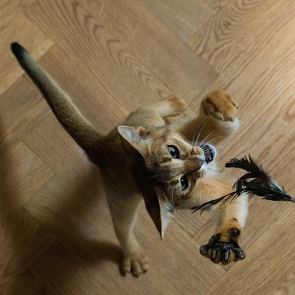
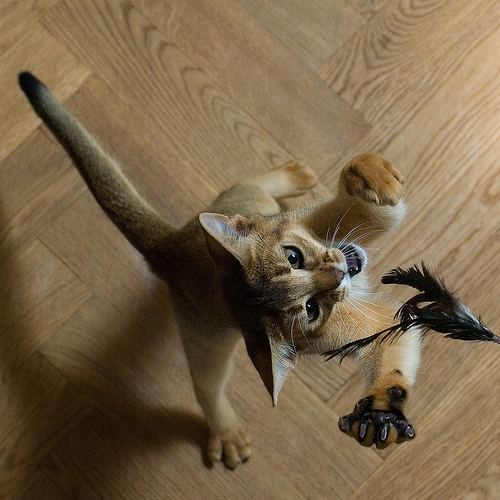


Bengal
The Bengal is a domestic cat breed developed to look like exotic jungle cats such as leopards, ocelots, margays and clouded leopards. Bengal cats are generally a bright orange to light brown colour, although pale or off-white "snow" Bengals also exist, and are popular among owners.


Birman
Birmans have a medium-sized, rectangular body with a broad face and distinct Roman nose. Their ears are ideally as wide on the base as they are tall and should be set as much on top of the head as on the side. The eyes are rounded and should be a deep sapphire blue. The Birman's fur is medium-long and should have a silky texture.


Bombay
The Bombay is a shorthair breed of domestic cat, closely related to the Burmese. Bombay cats are typically characterized as having an all black coat, black soles, black nose and mouth, with copper or green eyes. The close-lying, sleek and glossy black coat is generally coloured to the roots, with little or no paling.


British shorthair
The British Shorthair is a relatively powerful-looking large cat, having a broad chest, strong thick-set legs with rounded paws and a medium-length, blunt-tipped tail. The head is relatively large and rounded, with a short muzzle, broad cheeks (most noticeable in mature males, who tend to develop prominent jowls) and large round eyes that are deep coppery orange in the British Blue and otherwise vary in colour depending on the coat. Their large ears are broad and widely set.


Egyptian mau
Egyptian Maus typically are slender and muscular and they are thought to be one of the progenitor breeds of the modern domestic cat. They have anatomical, metabolic, and behavioral differences from other cat breeds which could be considered evidence of antiquity or at least uniqueness from other cat breeds.


Maine coon
The Maine Coon has a muscular body and strong legs, as well as a square muzzle and high cheek bones. Their most attractive feature is their long and furry tail, and of course their beautiful shaggy coat of fur. Most Maine Coons are tabby in colour.


Persian
Persian cats have a round head, short face, snub nose, chubby cheeks, small, rounded ears, big eyes, and a sturdy body.
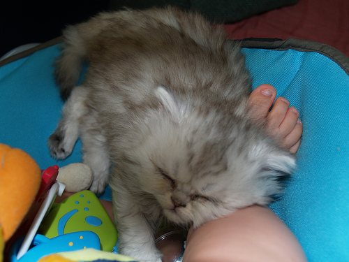


Ragdoll
A Ragdoll has a light-colored body with a darker face, legs, tail and ears.


Russian blue
The Russian Blue, with their vivid green eyes, long thin body and short distinctive double coat, is one of the most coveted of the short-haired cats. More recent developments are the Russian White and the Russian Black which, apart from their coat colours, are identical to the Russian Blue.


Siamese
A feature of the Siamese is their markings on the face, ears, lower legs and tail. The body colour of the Siamese can be frosty white or cream, and the markings range from the original seal point to tabby, tortie, red, cream, blue, chocolate and lilac point. Whatever the colour scheme of the cat, the Siamese will always have vivid blue eyes.
 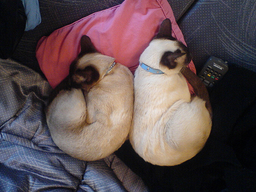
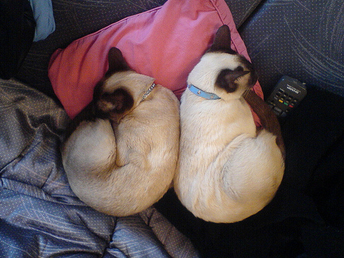

 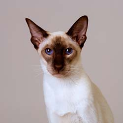
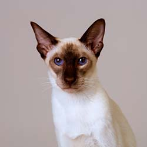

Sphynx
Although known to be hairless, the Sphynx in fact has a coat but it is very short and the texture appears to be almost suede-like or chamois leather-like. They have a slender but sturdy and heavy body with distinct triangular shape ears, wrinkly skin on their forehead and a long and narrow tail. Some Sphynxes may not or have very few whiskers.


Burmese
They are the only natural breed of brown cat. Their short, satin-textured, glossy coat is traditionally a rich, warm sable brown and the eyes are gold.


 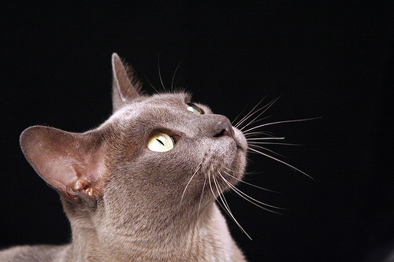
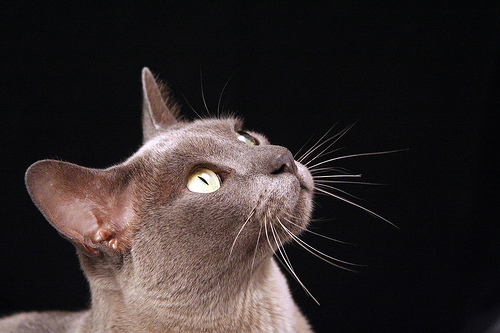
 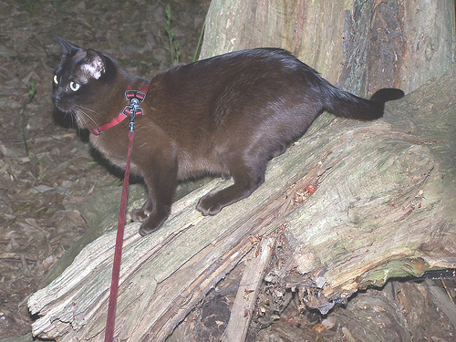
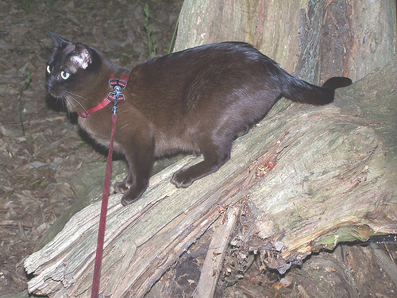
Manx
The most distinctive characteristic of the Manx cat is their lack or near-absence of a tail.
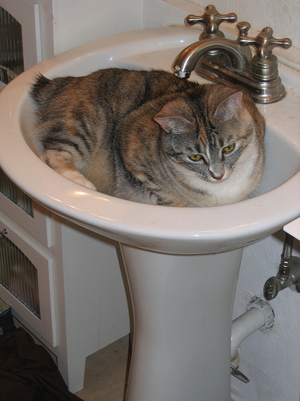